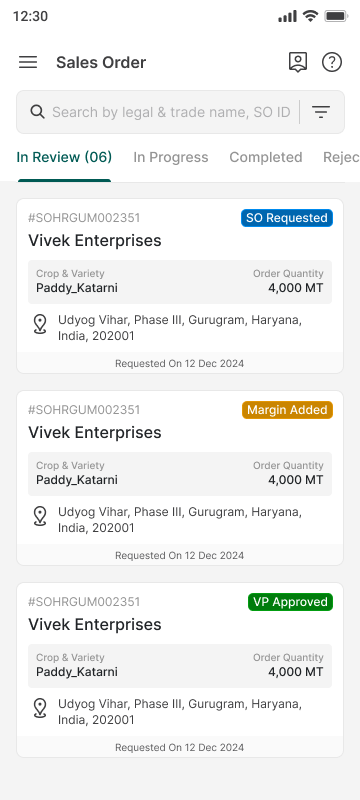
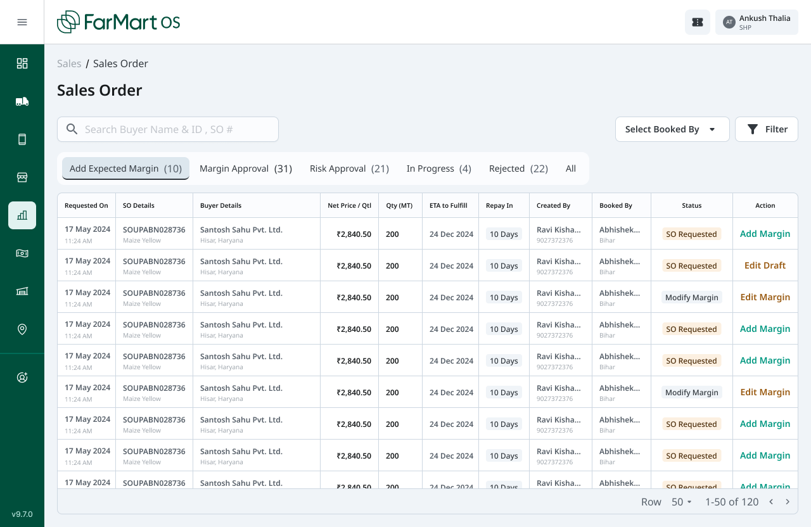
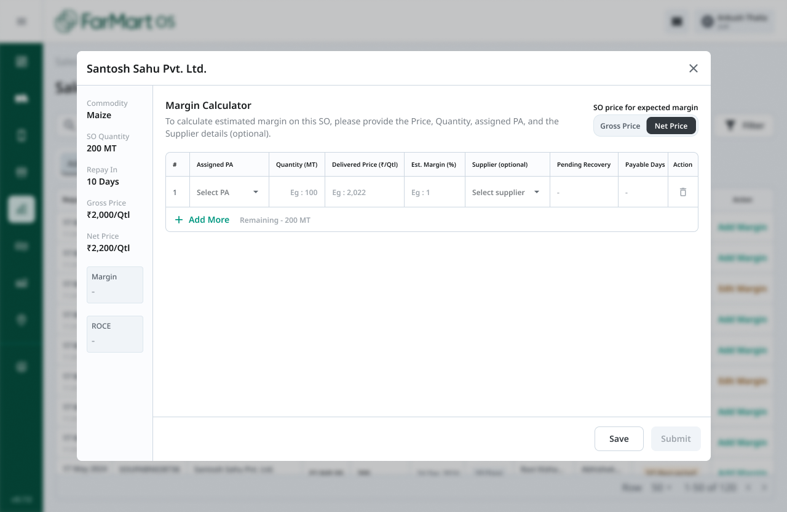
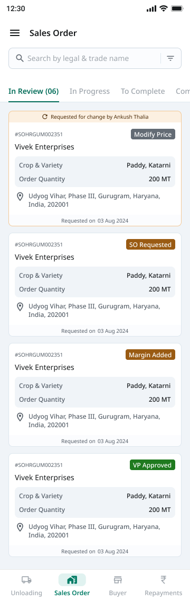
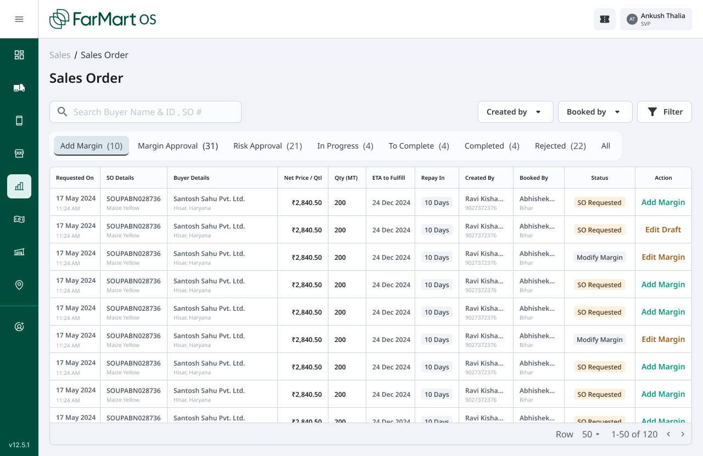
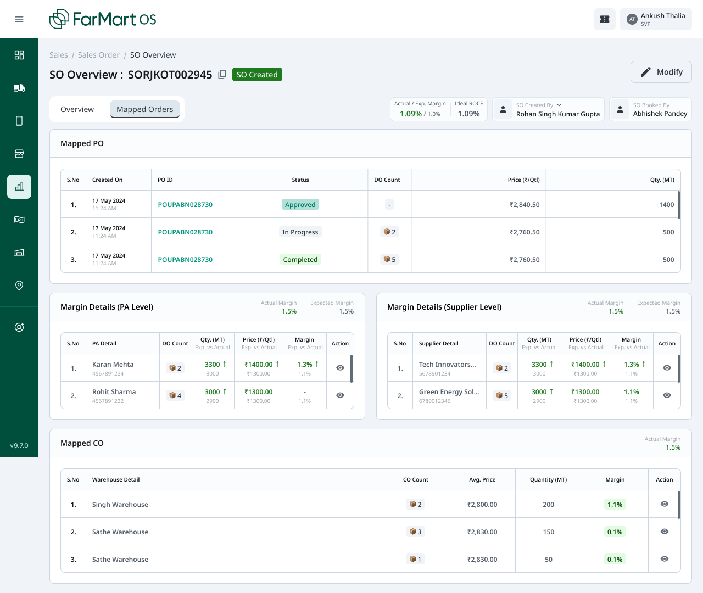

A unified case study of the PRO and OS journeys—showing how a fragmented sales-order lifecycle evolved into a role-aware operating system for triage, commercial control, approvals, and downstream fulfilment.
The design moved the Sales Order from being a record to being a control point: field teams gain fast status visibility, while operations teams gain structured margin inputs, ownership, approvals, and traceability across purchase and fulfilment entities.
Sales Order sits between demand capture and operational execution. The journey has to serve two very different contexts: a mobile user scanning and acting on orders in the field, and a desktop operator managing high-density commercial and fulfilment decisions.
The supplied designs show three generations of the workflow. PRO v1 establishes a compact, status-led mobile queue. OS v1 introduces an operational worklist organised around expected margin and approval states. OS v2 adds a focused margin calculator. OS v3 expands the order overview into connected purchase-order, procurement-agent, supplier, warehouse, quantity, and margin views. The final v2 screens align the two surfaces around shared status language and clearer role ownership.
| Surface | Primary job | Evidence in supplied screens |
|---|---|---|
| PRO mobile | Find, interpret, and act on an order quickly | Search, lifecycle tabs, compact cards, status chips, location, quantity, requested date, bottom navigation |
| OS desktop | Control margin, approvals, ownership, and fulfilment at scale | Operational tabs, dense worklist, filters, margin calculator, mapped PO/PA/supplier/warehouse views |
| Shared lifecycle | Keep field and operations aligned on the same order state | SO Requested, Margin Added/Modify Margin, VP Approved, In Progress, To Complete, Completed, Rejected |

Figure 1 — PRO v1, In Review. The first mobile model is a scan-first queue built around search, lifecycle tabs, business identity, status, commodity, quantity, location, and request date. Figma node 135:14461.
The product problem was not simply “create a sales-order screen.” The interface had to make a cross-functional workflow legible while preserving the detail needed for commercial control.
A single universal screen would fail. Mobile users need decisive summaries and obvious next actions; desktop operators need dense comparison, filters, structured inputs, and auditability. The solution therefore needs one lifecycle model expressed through two interaction models.

Figure 2 — OS v1, Add Expected Margin. The desktop worklist exposes the operational density of the problem: lifecycle tabs, buyer and order context, price, quantity, ETA, repayment terms, ownership, status, and action. Figma node 2306:76807.
Decision basis: These goals are inferred from repeated information architecture and controls in the supplied Figma frames. They are not quoted from a provided PRD.
No interview notes, analytics, support logs, usability reports, or formal PRD were present in the workspace or supplied links. A publication-quality case study should not invent them. The research section is therefore framed as a design-evidence synthesis.
Validate the inferred model with five roles: field sales, sales operations, procurement agent, approver/VP, and finance. Measure time-to-find, time-to-margin submission, correction rate, approval turnaround, and status-interpretation accuracy.
Both surfaces segment work by lifecycle state. This is stronger than a generic “all orders” list because it maps navigation to the user’s current responsibility: add margin, approve margin, assess risk, progress, complete, or review rejection.
The calculator requires assignment, quantity, delivered price, estimated margin, optional supplier, pending recovery, and payable days. Save and Submit are separate actions. This indicates that margin assessment is collaborative, iterative, and validation-dependent.
The calculator holds commodity, SO quantity, repayment period, gross price, net price, margin, and ROCE beside the input table. Users can assess changes without leaving the task or relying on memory.
The overview connects mapped purchase orders, procurement agents, suppliers, warehouses, delivery-order counts, quantities, prices, and margins. The post-approval problem is therefore coordination and variance control, not just record lookup.
The final PRO card adds a prominent “Requested for change” banner and an explicit “Modify Price” action. This elevates exceptions above normal status scanning and reduces the risk of silently stalled orders.

Figure 3 — OS v2, Margin Calculator. Commercial context remains fixed on the left while structured allocation inputs and validation-driven actions occupy the main task area. Figma node 6867:112478.
The architecture separates queue management, commercial decisioning, and fulfilment visibility while preserving a common Sales Order identity.
| Layer | Key objects | Primary questions |
|---|---|---|
| Queue | Order, buyer, status, owner, date, commodity, quantity | What needs attention? Who owns it? What happens next? |
| Commercial decision | Gross/net price, delivered cost, margin, ROCE, supplier, recovery, payable days | Is the order economically acceptable? What assumptions drive the result? |
| Approval | Margin approval, risk approval, modification request | Is the decision authorised? What changed? |
| Fulfilment | PO, procurement agent, supplier, warehouse, DO count, quantity, actual vs expected | How is the order being executed? Where is variance emerging? |
Relevant screens: Figures 1–6. The queue appears in PRO v1 and final v2; margin decisioning in OS v1/v2; fulfilment architecture in OS v3.
This explicit loop is important: commercial workflows rarely move linearly, and hiding revision states inside generic “In Progress” would create operational ambiguity.
PRO v1 uses tabs and coloured status chips to make state scannable. The card compresses identity, commodity, quantity, location, and date into a repeatable mobile unit.
OS v1 introduces tabs aligned to business actions, a searchable high-density table, owner filtering, contextual statuses, and row-level actions such as Add Margin, Edit Draft, and Edit Margin.
The margin calculator moves the most consequential inputs into a dedicated modal. The layout prioritises focused completion, keeps source context visible, supports multiple allocations, and separates drafting from submission.
OS v3 reframes the order detail as an execution overview. It surfaces actual versus expected margin and connects mapped POs, procurement agents, suppliers, and warehouses.
The final v2 designs sharpen exception handling and responsibility. PRO adds a requested-change banner and mobile action; OS adds Created by and Booked by filters and retains explicit lifecycle counts.
The final system is a shared sales-order lifecycle with role-appropriate presentation:

Figure 4 — Final v2 PRO. The mobile queue preserves fast scanning while adding exception messaging, explicit price modification, clearer state chips, and persistent product navigation. Figma node 35:57043.

Figure 5 — Final v2 OS. The operational queue aligns lifecycle stages with ownership filters, dense commercial context, explicit actions, and visible queue counts. Figma node 35:48417.
Search handles legal name, trade name, and SO identity. Horizontal lifecycle tabs reduce the active set. Cards use a stable reading order: SO ID and status, buyer, commodity and quantity, location, then requested date. The final design introduces exception context before the normal card content.
The worklist is tuned for repeated decisions. Columns hold the minimum comparison set: request date, SO identity, buyer, net price, quantity, ETA, repayment, ownership, status, and action. Queue tabs and counts expose workload distribution.
The modal anchors immutable order context in a side rail and uses a row model for one-to-many allocation. The gross/net toggle makes the calculation basis explicit. Remaining quantity gives immediate allocation feedback; disabled Submit communicates incomplete requirements without discarding draft work.
The overview surfaces actual versus expected margin and ideal ROCE, then breaks execution into mapped PO, procurement-agent, supplier, and warehouse levels. This creates a progressive drill-down from order health to the entity causing variance.

Figure 6 — OS v3, Sales Order Overview. The approved order becomes an operational control surface linking commercial targets to mapped purchase orders, procurement agents, suppliers, warehouses, quantities, and delivery-order counts. Figma node 7867:14213.
| Challenge | Design response | Trade-off |
|---|---|---|
| One lifecycle, multiple roles | Shared statuses with card-based PRO and table-based OS | Cross-platform consistency is semantic rather than visually identical |
| High information density | Desktop tables, tabs, filters, fixed context, and progressive overview sections | Power-user efficiency increases onboarding and accessibility demands |
| Margin complexity | Dedicated calculator with row allocations and visible source context | A modal focuses work but constrains very large allocation sets |
| Draft versus commitment | Separate Save and Submit states | Users need clear draft persistence and recovery expectations |
| Exceptions and rework | Requested-change banner and explicit modify actions | Reason history and change comparison are not visible in supplied frames |
| Actual versus expected performance | Overview-level variance indicators by PA, supplier, and warehouse | Colour-based signals need accessible text equivalents and thresholds |
The desktop solution relies on dense tables, compact type, muted secondary text, and colour-coded states. Accessibility, keyboard navigation, responsive overflow, and error recovery require explicit validation before calling the experience complete.
No production analytics, adoption figures, revenue impact, approval-time change, or usability benchmark was supplied. Therefore the defensible result is the product capability created—not a fabricated percentage improvement.
| Expected impact | Mechanism | Recommended KPI |
|---|---|---|
| Faster operational triage | Status queues, counts, search, owner filters | Median time from request to first action |
| Fewer commercial errors | Structured inputs, remaining quantity, validation, approval states | Margin correction and re-submission rate |
| Better margin control | Expected/actual comparison and entity-level drill-down | Expected-to-actual margin variance |
| Clearer accountability | Created/booked/PA/supplier/warehouse attribution | Unowned orders and handoff delay |
| Less offline coordination | Visible status, exceptions, and mapped fulfilment context | Support tickets or external follow-ups per SO |
The next investment should not be another visual redesign. It should be instrumentation plus workflow-history depth. Without those, the product can display a sophisticated process but cannot prove where time, margin, or accountability is being lost.